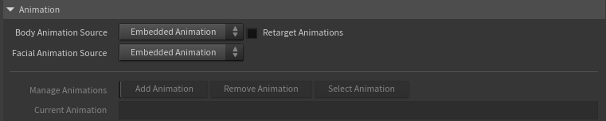
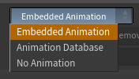
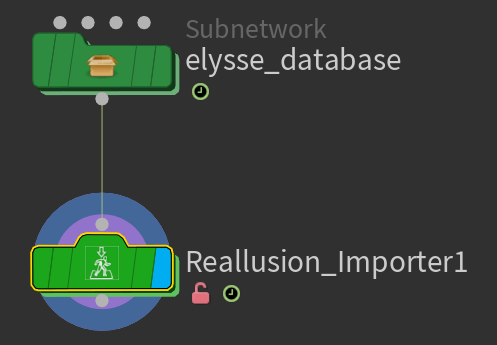

Animation
The tool can play the motion baked into your imported character, and it can also manage a small library of additional animation clips — added from FBX files or USD motion clips — letting you switch between different motions on the same character.

Using a clip from a different character?
A motion clip carries the skeleton and proportions of the character it was exported with. Clips made for this same character play back directly. For a clip authored on a differently-proportioned Character Creator character, turn on
The body and the face are chosen separately — two menus — so you can keep one character's body motion while driving the face from a different clip (or freezing it).
Body Animation Source
Chooses where the character's body motion comes from (the skeleton — torso, limbs, head):
- Embedded Animation — the motion baked into the character's own FBX (what came in when you imported).
- Animation Database — the active clip from a library of clips you've added.
- No Animation — freezes the body in a static pose with no movement (the embedded motion held at the timeline's start frame). Use this for stills, look-dev, or any time you want the character motionless without removing its animation.
Facial Animation Source
Chooses where the face comes from — expressions, visemes, blinks, eye gaze and the wrinkle response — independent of the body:
- Embedded Animation — the facial performance baked into the character's own FBX.
- Animation Database — the active database clip's facial performance.
- Bypass Animation — freezes the face in its neutral expression while the body keeps moving.
The headline use is Body = Animation Database + Facial = Embedded: borrow a body performance (mocap, a clip from another character) while keeping this character's own facial animation. When the two sources differ, the chosen face is grafted onto the body and Retarget Animations turns on automatically so the body is first conformed to this character's skeleton (otherwise the face would sit on a mismatched skull).

Bypass note
Bypass freezes the facial blendshapes (visemes, expressions, blinks). The head, jaw and eye bones still follow the body clip, so they can still move — it calms the face, it isn't a hard freeze of every facial bone.
Retarget Animation
A motion clip is normally tied to the proportions of the character it was made for. Retarget Animation lets you drive this character with a database clip that was authored on a different Character Creator character. It's off by default.
- Off — leave it off for clips that were made for this character. They already match its skeleton and proportions, so they play back correctly as-is, with no extra cost.
- On — turn it on for a clip from a different Character Creator character. The body is proportion-matched to the source motion, and the teeth, tongue and eyes are corrected so they stay seated instead of clipping. The facial performance — expressions, visemes and blinks — transfers automatically, because every Character Creator character shares the same blendshape set.
Which one do you need?
If a database clip makes the character look broken — teeth or eyes clipping through the face, or distorted proportions — it almost certainly came from a different character. Turn Retarget Animation on and it snaps into place.
It's most useful when Body Animation Source is Animation Database with a clip from another character. It also turns on automatically in two situations: whenever Facial Animation Source differs from Body Animation Source (grafting one clip's face onto another clip's body needs the body conformed to this character first), and whenever a database clip's format (USD/FBX) differs from the Import mode (the two exports bind different rest poses). Retargeting adds some cooking cost, so for a clip made for this character in the same format, leave it off.
If this character has rig parts the clip's character doesn't — hair spring bones, accessory rigs — those can't receive motion from the clip. They follow along rigidly instead (hair rides the head, without its secondary motion).
Even with automatic retargeting, retargeting is approximate: proportions may distort if the characters are different enough (eg. a stylized animal getting animation from a humanoid character). Keep all serious animation authoring in Character Creator/iClone.
Building an animation library
You can add extra motion clips — FBX or USD — and switch between them.
Add Animation
Opens a file browser to add a motion clip: an FBX animation export, or a USD motion clip (the Motions folder Character Creator writes beside every USD character export). The first clip you add creates a small animation database — a green container node placed next to the Reallusion Importer. Adding a clip automatically switches the source to Animation Database and makes the new clip active.
USD clips are the light option — they load instantly and use very little memory, while each FBX clip costs significant RAM. A USD clip binds to the character's USD export, which is found automatically next to the clip; you're only asked to point at it if none is found.
Both formats mix freely in one database, and either works in either import mode. Driving an FBX-imported character with USD clips is a particularly good combination: you keep the FBX-only features (expression wrinkles, full hair re-dye) while the clips stay featherweight. When a clip's format differs from the Import mode,

Select Animation
Choose which clip in your library plays on the character. Switching clips is instant.
Current Animation
A display-only field showing the name of the clip currently playing.
Remove Animation
Removes a clip from the library and frees its memory. If you remove the last clip, the source falls back to Embedded FBX Animation.
FBX animation is the biggest driver of memory use in the whole tool — and the cost scales with a clip's length, since Houdini holds the expanded character for every frame in the range. Often several gigabytes per clip, and far more for long, multi-thousand-frame clips. Keep your frame-ranges to what you actually need, add only the clips you'll use, and use Remove Animation to free clips you're done with (it also clears the scene cache to reclaim RAM). USD motion clips don't have this problem — as stored clips they stay light regardless of length. (Separately, playing a long range fills Houdini's playback cache in either mode — see Long animations and playback memory.) See Performance & Caching.
Workflow tips
- Prefer USD motion clips when you have them — instant to load, near-zero RAM, and they work on FBX-imported characters too.
- Keep your FBX clip library lean. Two or three active clips is comfortable; a dozen will eat your RAM.
- When you finish with an FBX clip, remove it rather than leaving it loaded.
- Probably you're only ever using the character's own baked motion ("Mesh + Motion" FBX export in CC), you don't need the database at all — just leave the source on Embedded FBX Animation.